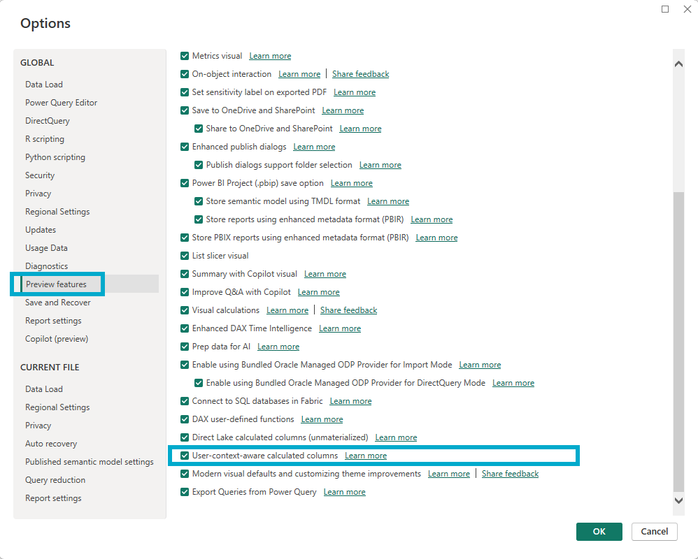
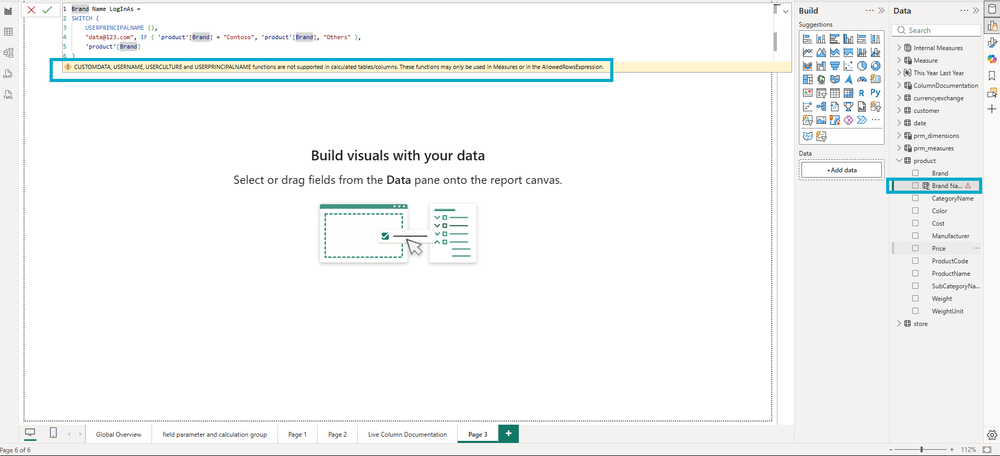
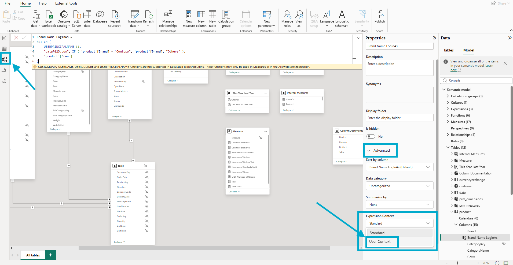
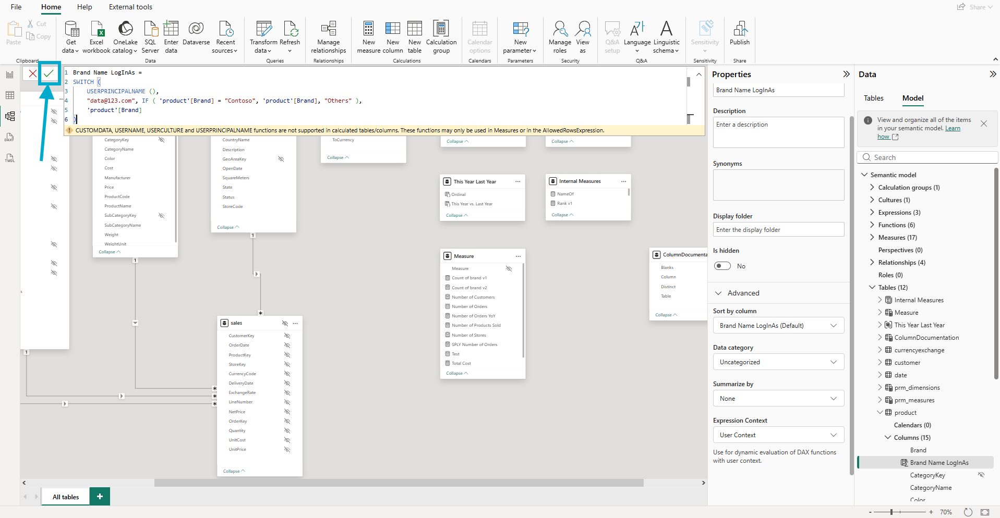
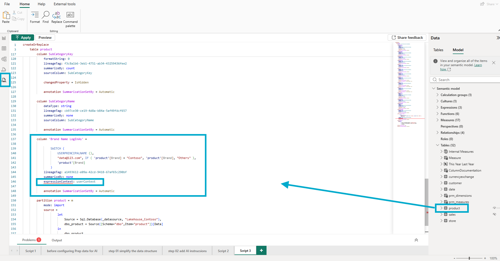
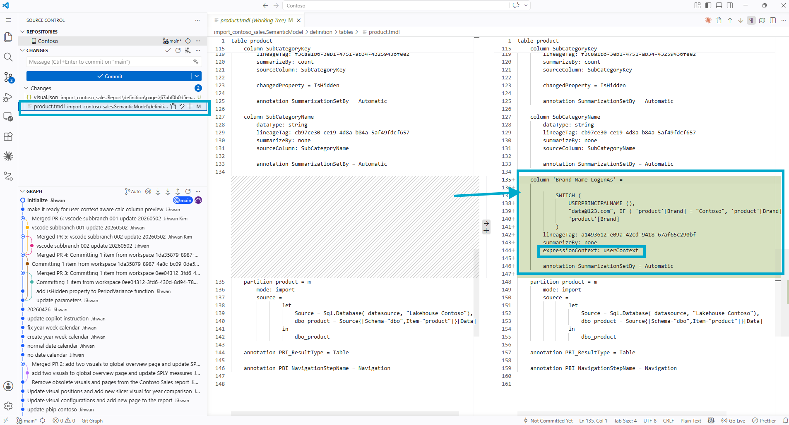
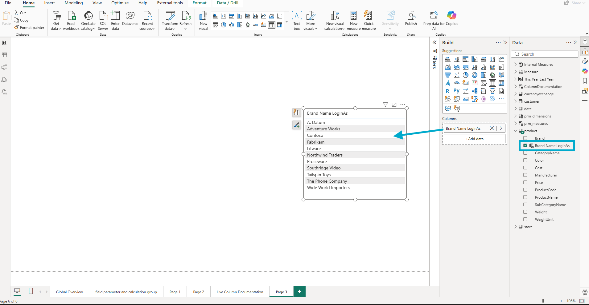
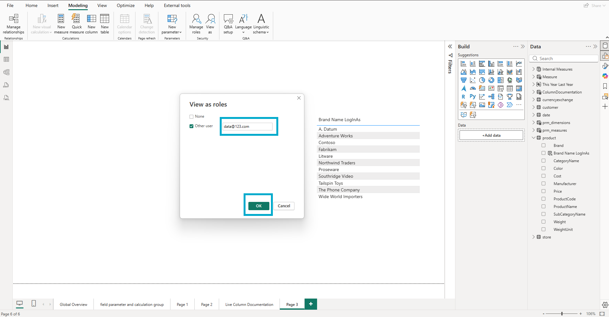
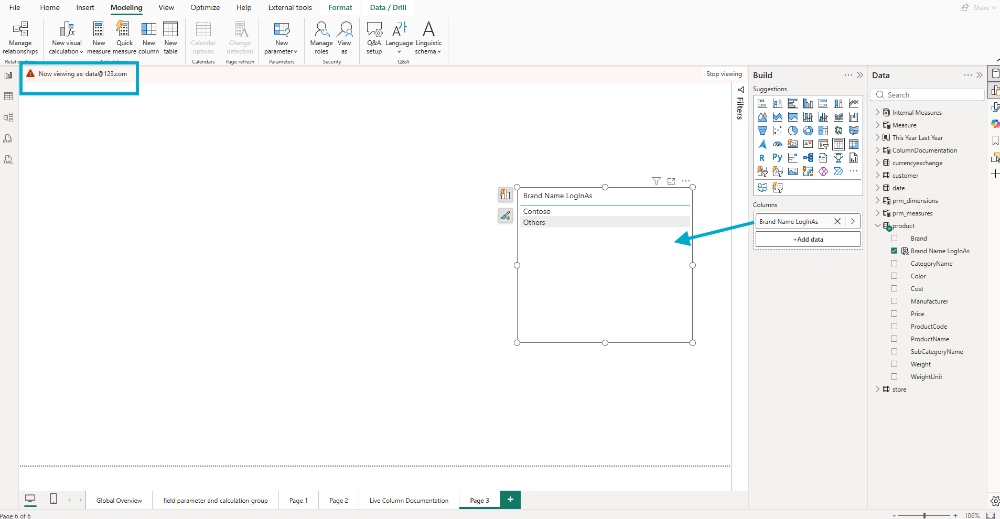
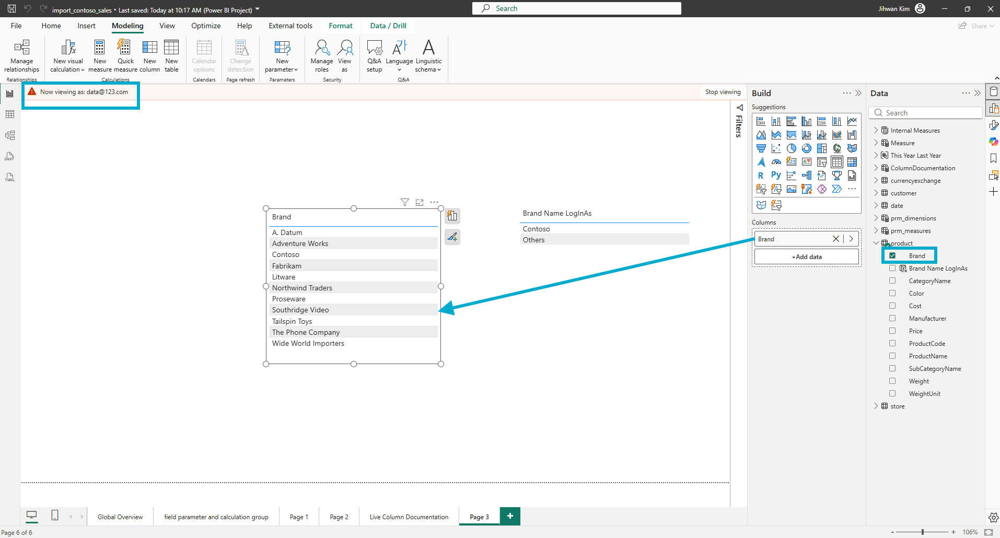

In this writing, I want to share how the new Expression Context property unlocked a kind of calculated column I had not been able to create before, and how I want to make sure other Power BI developers do not mistake what it does for row-level security.
I didn't expect a single dropdown in the Properties pane to change what a calculated column is allowed to do. My plan was simple. Turn on the new April 2026 preview feature, drop USERPRINCIPALNAME() into a column on my Contoso Import model, and see what landed in the TMDL file. Instead, I ended up with two table visuals on the same report page, one showing every brand, the other showing only a curated subset, and seeing for the first time a calculated column that does not behave like calculated columns have ever behaved before.
The expression is re-evaluated per user session at query time, instead of being computed once at refresh and stored. Calculated columns have always been static. This one is not.
1. The Switch I Had to Turn On First
The April 2026 Power BI release introduced a Preview features toggle called User-context-aware calculated columns, sitting just below the new Direct Lake calculated columns (unmaterialized) switch in Options and settings. Both flip on independently. For this experiment I only needed the user-context one.

The screenshot above shows the Preview features panel after I checked the User-context-aware calculated columns box. Nothing else changed visually until I went back to the model and tried to write a column expression that referenced USERPRINCIPALNAME().
2. The First Time I Wrote USERPRINCIPALNAME() Inside a Calculated Column
I had not used USERPRINCIPALNAME() inside a calculated column before. Whenever a per-user behavior was needed in the past, I kept it in a measure. The functions that surface user identity were not part of my calculated-column toolkit, and I had never tested whether they were even allowed there.
The new preview feature was the reason to try. I added a calculated column on the product table called Brand Name LogInAs and wrote a SWITCH over USERPRINCIPALNAME() that returns either the brand name Contoso, the literal string Others, or the original brand name depending on who is asking.

A yellow warning bar appeared below the formula bar with the exact text "CUSTOMDATA, USERNAME, USERCULTURE and USERPRINCIPALNAME functions are not supported in calculated tables/columns. These functions may only be used in Measures or in the AllowedRowsExpression." For me this was new information. The warning was the documented gate that the new property explicitly removes. I had been told what to do next without having to read about it. Open the Properties pane and find the property that lets these functions live in a column.
3. The Property in the Properties Pane
The Expression Context dropdown lives inside the Advanced section of the Properties pane in Model view. Its options are Standard (the default, materialized at refresh time) and User Context (evaluated at query time, with awareness of USERPRINCIPALNAME, USERCULTURE, USEROBJECTID, USERNAME, and CUSTOMDATA as documented in the Expression Context section of the Microsoft Learn calculated columns page).

I switched it to User Context, clicked the tick mark to confirm the formula, and noticed something small but worth flagging. The warning did not clear on the first apply. It cleared after a second click on the tick mark.

I am not sure whether that is intentional behavior or a UI quirk in the preview. Either way, the second click cleared the warning, and the column took.
4. The TMDL Property That Got Written
This is where I cared what got written to the file. The Microsoft Learn page documents the UI control and the storage-mode matrix, but it does not spell out the literal TMDL property name that gets written when you flip the dropdown. The only way to find out was to look.
Power BI Desktop ships a TMDL view that lets you read the current model definition without leaving Desktop. I opened it and looked at the product table.

The screenshot above is the TMDL view of my new column as Power BI Desktop generates it. The new property is expressionContext: userContext. One line, sitting alongside the column's lineageTag, summarizeBy, and annotation lines. Direct, parseable, version-controllable. The column block reads:
column 'Brand Name LogInAs' =
SWITCH (
USERPRINCIPALNAME (),
"data@123.com", IF ( 'product'[Brand] = "Contoso", 'product'[Brand], "Others" ),
'product'[Brand]
)
lineageTag: a1493612-e09a-42cd-9418-67af65c290bf
summarizeBy: none
expressionContext: userContext
annotation SummarizationSetBy = AutomaticThe expression itself is straightforward. If the logged-in user is data@123.com, the column returns the brand name when it equals Contoso and the literal string "Others" for everything else. For every other user, the column passes through the original brand name unchanged.

The diff above shows the column appearing as a clean addition to product.tmdl. The expressionContext: userContext line is the load-bearing piece. Without it, the same expression would not compile. With it, the expression compiles and behaves differently for different users at query time.
5. The First Test: View as Roles, Without an Actual Role
I needed to confirm the column was actually responding to the logged-in user before I went any further. Power BI Desktop has a Modeling tab feature called View as, which is normally used to test row-level security roles. Underneath the role-testing UI there is also an Other user checkbox that takes a free-text user principal name.

The table visual above shows the eleven brand names from the product table when no role-or-user impersonation is active. The full list, just as it sits in the data.

I checked Other user, typed data@123.com, and clicked OK. A red banner appeared at the top of the canvas reading Now viewing as: data@123.com, and the same table visual reduced to two values.

The table visual now shows Contoso and Others. That is exactly what the SWITCH expression was supposed to produce when USERPRINCIPALNAME() returned data@123.com. The column is genuinely responding to the impersonated user. The user-context-aware calculated column works.
6. The Aha: Dynamic Does Not Mean Secure
This is the part I want every reader to internalize, because the surface behavior of expressionContext: userContext is going to be easy to mistake for a security feature.
I dropped the original Brand column from the product table onto a second table visual on the same page, kept the View as impersonation active, and looked at both visuals side by side.

On the left, the regular Brand column shows every brand in the dataset. A. Datum, Adventure Works, Contoso, Fabrikam, Litware, Northwind Traders, Proseware, Southridge Video, Tailspin Toys, The Phone Company, Wide World Importers. On the right, my new Brand Name LogInAs column shows just Contoso and Others. Both visuals share the same impersonated user, the same page, and the same model. Only the right one uses the user-context-aware calculated column. The left visual uses the underlying source column and reveals everything.
This is the aha moment of the post. A user-context-aware calculated column shapes how a column renders for a user; it does not gate what data the user can reach. Anyone who treats expressionContext: userContext as a security boundary is one drag-and-drop away from leaking the underlying data. The user-context behavior is real, but it is decoration, not access control.
The Microsoft Learn page itself signals this when it names the marquee scenario for the feature. In the Expression Context section, Microsoft writes that user-context-aware calculated columns "enable unique scenarios such as data translations for multi-lingual semantic models" and links to the data translations guidance. Translations are a labeling concern. A French user and a Korean user looking at the same product should see the same product. Only the labels change. Microsoft's own framing tells me the feature was designed for label and category personalization, not for security.
That distinction is the whole story of this post. It is also the reason the next section matters more than I initially thought it would.
7. From a DevOps Standpoint, Four Habits Have to Change
From a DevOps standpoint, this is foundational, but in a counterintuitive direction. The new property does not enable a new security pattern. It introduces a new way to get fooled into thinking you have one, and that means review and validation habits need to catch up with the feature.
Code Review: Treat expressionContext: userContext as a Personalization Marker, Not a Security Marker
When a pull request adds a calculated column with expressionContext: userContext, the temptation is going to be to read USERPRINCIPALNAME() and assume the column is solving a security problem. It is not. The reviewer's job is to ask a different question. "Is this column intended to render different labels per user, or is the author expecting it to hide data?" If the answer is the second, the PR needs to be sent back with a request to add real RLS roles in the roles definition file and keep the calculated column only as a presentation layer.
I would go further. A repository convention worth adopting is that every PR introducing a column with expressionContext: userContext must include a description annotation on that column explaining the user-facing intent. The TMDL block is small. A one-line description is cheap to write and saves the next reviewer a long argument.
Validation: A Best Practice Analyzer Rule Worth Writing
Tabular Editor's Best Practice Analyzer is the natural place to encode the question above as a rule. The rule worth writing flags any table that contains a column with expressionContext: userContext but has no associated row-level security role defined on the same table. That combination is the misuse pattern. It does not mean the model is broken. It means a human needs to confirm that the absence of RLS on the table is intentional.
I am not implementing the rule in this post. The exact Tabular Editor scripting API call to read the Expression Context property deserves its own walkthrough, and I would rather get it right separately than gesture at it here. The point for now is that the rule is straightforward to articulate, easy to enforce in CI as part of a BPA quality gate, and exactly the kind of validation that turns a subtle feature into a safe one.
Capacity Planning: Materialization Just Quietly Moved
This is the angle I would have missed if I had not read the Materialization and performance section of the Microsoft Learn calculated columns page. The matrix in that section spells out which storage modes pair with which Expression Context settings, and what materializes versus what does not. For an Import-mode column, the default Standard expression context produces a materialized column, computed once at refresh and stored. Flip the same column to User Context, and the same column becomes unmaterialized, computed at query time for every user session.
Microsoft's own framing of the trade-off is short. The page states that "unmaterialized calculated columns can negatively impact query performance because values need to be derived at query time" and that "materialized calculated columns can negatively impact refresh performance because values need to be derived at refresh time." Two sentences in the same section.
From my own perspective, the practical implication is that the cost has moved across the refresh-versus-query boundary. The column you no longer need to materialize stops costing CU at refresh time. The expression you now evaluate per query starts costing CU at query time. Whether the model gets cheaper or more expensive overall depends on how often the report is queried versus how often the model refreshes, and I do not have a rule of thumb for that ratio. The first time a column with expressionContext: userContext lands on a high-traffic report, capacity monitoring is the safest place to find out.
Documentation: The TMDL Diff Looks Innocent
The last habit is the smallest and the most overlooked. A calculated column with expressionContext: userContext looks almost identical in TMDL to a calculated column without it. One extra line. A reviewer scanning a long diff is going to slide right over it.
The mitigation is documentation. Every column with expressionContext: userContext should have a description property explaining the user-facing intent. "Renders the brand name as either Contoso or Others when viewed by partner accounts; otherwise passes through the original brand." The description shows up in the Properties pane, in the TMDL diff, and in any documentation generated from the model. Without it, future maintainers will read the column, decide it duplicates Brand, and remove it. The line that prevents that mistake is one comment of plain prose.
Closing Thoughts
This experience left me with a new mental model. expressionContext: userContext introduces a calculated column that re-evaluates per user session at query time, and that user-aware behavior is not the same as security.
Calculated columns have been static for as long as Power BI has had them. Values were computed once at refresh and lived in the model file ready for retrieval. That world has a new neighbor now. A column whose value depends on who is asking, evaluated freshly per user session, kept in source control as a single one-line TMDL property. The use cases are real. Partner-facing reports where the partner sees their own brand prominently and competitors collapsed. Multi-language reports where the same fact tables drive different label sets. Persona-driven defaults where executives see one summary level and analysts see another, while both share the same underlying detail and the same RLS roles. None of those are security. All of them benefit from a column-level switch instead of a measure-shaped detour.
The four DevOps habits I came away with are small in isolation and load-bearing together. PR reviewers ask whether the column is a security column or a labeling column. BPA flags the misuse pattern. Capacity planners account for the materialization shift. Maintainers find a description sentence on every user-context column they encounter. None of those is exotic. All of them are easier to do on the day a feature lands than to retrofit later.
I hope this helps having fun in exploring user-context-aware calculated columns and embracing this new era of dynamic per-user rendering inside the semantic model itself!